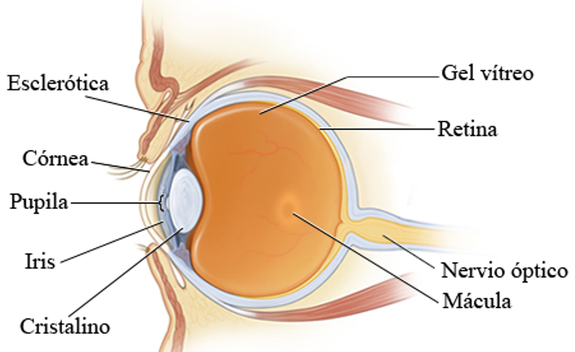
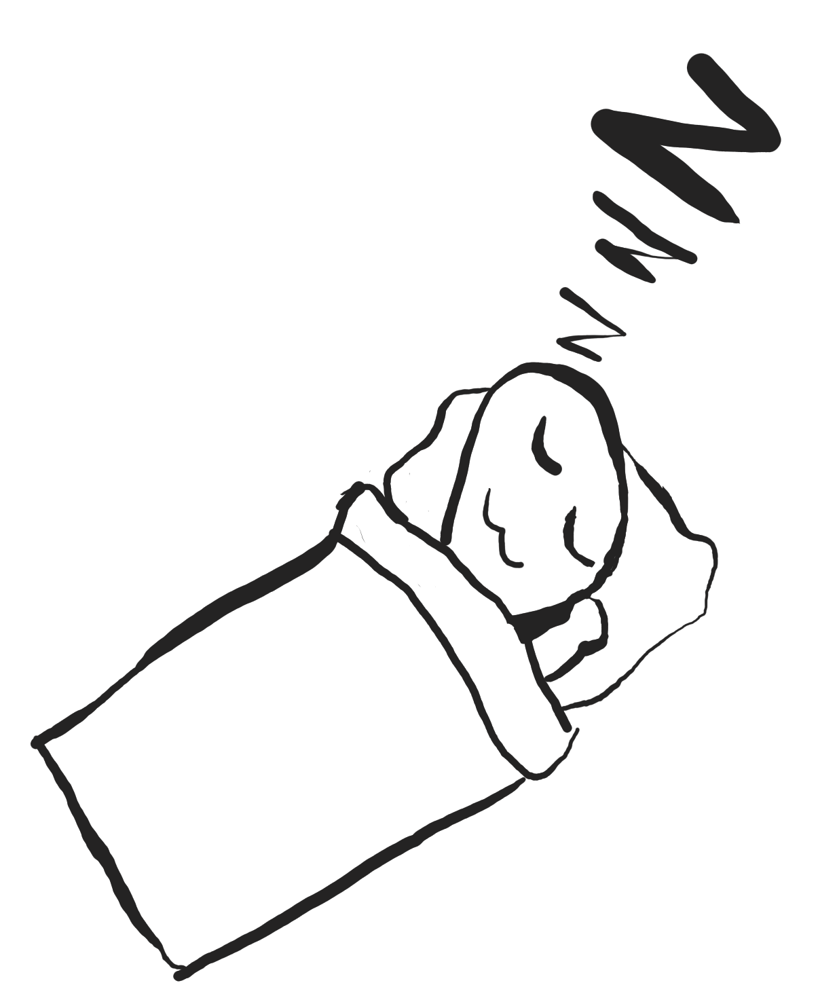

EL CUIDADO DE LOS OJOS Y LOS DIPOSITIVOS ELECTRÓNICOS
Hay dos problemáticas que son muy hablados respecto a la salud ocular y los dispositivos electrónicos, estos siendo la luz azul y la intensidad de la luminosidad de las pantallas.
Para entender los efectos que estos dos factores pueden tener en los ojos primero hay que entender mejor la estructura de los ojos y cómo funcionan, no se hablara de toda
la estructura del ojo ya que es compleja y el punto no es hacer una clase de oftalmología. No se hablará de toda la estructura del ojo ya que es compleja y el punto no es hacer una clase de oftalmología,
sino proporcionar un contexto suficiente para abordar estas problemáticas.

[Imagen 1]
Cornea: Este ayuda enfocar la luz.
Cristalino del ojo: Ayuda a enfocar la luz y los objetos que se observan, esto lo logra al funcionar como una lente biconvexa, en pocas palabras junta toda la luz que recibe en un solo punto, y este punto es la retina.
El iris: Es la parte que contiene color en el ojo, pero lo importante aquí es que este tiene músculos dentro que hacen que la pupila (agujero redondo en el centro del iris) aumente o reduzca su tamaño, con la intensión de limitar cuanta luz entra en el ojo.
La retina: Es una capa de tejido sensible a la luz la que contiene células llamadas fotorreceptores que transforman la luz en impulsos eléctricos, hay dos tipos de estos, los bastillos que perciben el negro y el blanco, y los conos, estos perciben el resto de los colores.
La macula: Es una parte especifica de la retina que nos permite ver los pequeños detalles y el movimiento.
De forma general el funcionamiento del ojo es recibir luz y transformar está en impulsos eléctrico.
LA LUZ AZUL
Ahora bien, a hablar de los problemas, el primero a tratar será la luz azul.
Es muy hablado que la luz azul daña los ojos y que por lo mismo no se debería ocupar por horas los dispositivos electrónicos, tales como los teléfonos, tabletas y computadoras, por lo mismo se a popularizado el uso de lentes que reflejen la luz azul, pero ¿cuánto de verdad tiene esto?, pues bien en la actualidad hay muchos artículos e instituciones dicen que no hay evidencia que apoye a la idea de que la luz que emiten los LEDs en nuestro dispositivo dañe la retina humana, cabe aclarar que el hecho de que la luz azul daña la retina no es mentira, pero hay que recalcar que en el estudio que se demostró este hecho no fue orientado a dispositivos electrónicos, por lo que hay dos principales problemas para considerar que la luz azul de los LEDs daña la retina:
• Usaron las células como tal y también lo probaron en animales, pero en ningún momento se probó en humanos como tal (por obvias razones de ética).
• El segundo problema es que no usaron un teléfono, Tablet o computadora para emitir la luz azul.
¿Como los resultados no son concluyentes significa que no es necesario usar lentes que bloqueen la luz azul?
Como los resultados no son concluyentes nadie te puede decir que no es necesario o si es necesario para evitar daños en la retina, por lo que la decisión al final es tuya.
Sin embargo, hay un problema real que tiene la luz azul de los dispositivos electrónicos, y es que este puede afectar tu sueño ya que cambia tu ciclo circadiano. Pero este problema puede ser solventado de otras formas, de estas se hablarán al final.
INTENSIDAD DE LA LUMINOSIDAD
Otro problema muy sonado con los dispositivos electrónicos es que tan fuerte es la luz de las pantallas, pues bien, este problema es comúnmente ocurrente en la noche ya que la luz de nuestro alrededor es muy baja, pero la de nuestra pantalla es muy alta.
Esta diferencia de luminosidad no trae daños permanentes a los ojos, pero causa que se te cansen más rápido, por lo que en este caso el problema es real y no hay afirmaciones sin fundamentos, por lo que podemos pasar a la parte más importante.
• Ojos llorosos
• Visión borrosa
• Ojos secos
• Dolores de cabeza
CÓMO EVITAR ESOS PROBLEMAS SIN GASTAR DINERO
Parpadea más.
Parecerá raro pero la razón es que nos estamos concentrando tanto en un solo punto, esto causa que parpadeamos menos veces de lo normal, hay estudios que comprueban que parpadeamos entre 5 a 7 veces por minuto, ¡esto debería hacerse 15 veces!
Regla 20-20-20
Esta indica que cada 20 minutos veas un objeto alejado 20 metros de ti por lo menos 20 segundos.
Cambia la posición de la pantalla respecto a tu cabeza.
Tu cuerpo debe de estar a la distancia de aproximadamente 63 cm (más o menos la distancia de tu brazo) y la pantalla debe de estar ligeramente debajo de tu campo de visión cuando estas mirando hacia enfrente.
Cambia el brillo de tu pantalla.
Cuando salimos a la calle y tenemos el brillo del teléfono, Tablet o laptop y esto no presenta un problema para entender lo que estamos viendo o leyendo, pero cuando es de noche esto trae el problema que se mencionó anteriormente con la diferencia de brillo. Para lograr un brillo menor se puede usar aplicaciones gratuitas tanto para dispositivos móviles como para computadoras. Aquí tengo dos recomendaciones: El primero es una aplicación para teléfonos y la segunda para computadoras.
|
Link a night screen (Google play) |
Link a PangoBright |
Somos estudiantes de la Escuela Superior de Cómputo perteneciente al Instituto Politécnico Nacional.
¿Por qué creamos esta pagina?
Para ser honestos esto es un proyecto escolar, pero este tenia que ayudar a otros, pues bien pense, ¿Qué problema suelen tener la gente?. Simple, la luz de los dispositivos electronicos y el como puede afectar la vision de las personas, pues he aqui nuestro granito de arena para infromar sobre este problema.
Referencias
[1] Estructuras del ojo (vistas frontal y lateral). (n.d.). Cigna.com. Retrieved June 29, 2024, from https://www.cigna.com/es-us/knowledge-center/hw/estructuras-del-ojo-tp9807
Las partes del ojo humano y sus funciones. (n.d.). Masvision.Es. Retrieved June 29, 2024, from https://www.masvision.es/blog/las-partes-del-ojo-humano-y-sus-funciones
Porter, D. (2023, November 27). Digital devices and your eyes. American Academy of Ophthalmology. https://www.aao.org/eye-health/tips-prevention/digital-devices-your-eyes
Boyd, K. (2024, June 27). Computers, digital devices and eye strain. American Academy of Ophthalmology. https://www.aao.org/eye-health/tips-prevention/computer-usage
Cougnard-Gregoire, A., Merle, B.M.J., Aslam, T. et al. Blue Light Exposure: Ocular Hazards and Prevention—A Narrative Review. Ophthalmol Ther 12, 755–788 (2023). https://doi.org/10.1007/s40123-023-00675-3
li Qasim MS , et al. Effects of Electronic Devices on Vision in Students Age Group 18-25. Ann Med Health Sci Res. 2021;11:1572-1577